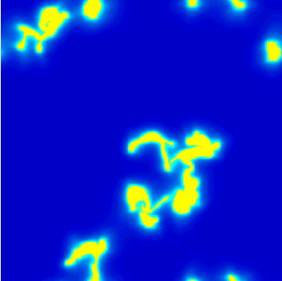

Historical aside / van der Waals 1873 · Maxwell 1875
Two phases.
Which area must balance?
Maxwell’s equal-area construction is a useful companion to ZP saturation. Each selects a coexistence condition through a vanishing integral, with different variables and physical assumptions.
Maxwell’s rule on a van der Waals isotherm.
For molar volume v, the van der Waals equation is p(T,v) = RT/(v − b) − a/v². The attraction term and excluded volume can give a loop below the critical temperature. At a fixed temperature, Maxwell’s construction selects the liquid–vapour coexistence pressure by balancing signed areas on the pressure–volume diagram:
p(T, v_liquid) = p(T, v_vapour) = p_coexist ∫[v_liquid → v_vapour] [p(T,v) − p_coexist] dv = 0
In modern thermodynamic terms, the two phases share temperature, pressure and chemical potential. The horizontal segment represents changing phase fractions. The mechanically unstable portion of the homogeneous loop is bypassed. Equal areas are coordinate dependent: replacing volume by density requires the inverse-square Jacobian; equal-looking areas on a pressure–density plot do not give the same rule.
Maxwell’s 1875 paper explicitly describes a horizontal line cutting equal areas from an isothermal curve, using a reversible-cycle work argument. The transcription of the original Chemical Society paper preserves that argument. The construction is properly called Maxwell’s equal-area rule, applied here to a van der Waals equation of state.
ZP saturation balances a different integral.
The cold and warm interstellar phases have different temperatures and are maintained by external heating and radiative cooling. With net volumetric cooling Q = n²Λ − nΓ, a static planar conductive front satisfies:
F = κ(T) dT/dx F dF/dT = κ(T) Q(T,P) F(T_cold) = F(T_warm) = 0 ∫[T_cold → T_warm] κ(T) Q(T,P_sat) dT = 0
This derivation assumes a static planar front with no mass flux and the specified local cooling law and conductivity. It is an energy-transport selection condition. Thermodynamic liquid–vapour coexistence does not directly supply this pressure. The analogy is cancellation of signed integrals; the ZP condition includes a conductivity weight and integrates over temperature. A Maxwell construction on the interstellar pressure–density equilibrium curve would generally select a different value.
For the corrected KI2002 fit with κ = 2500√T, our computed benchmark gives Psat/kB = 2822.884297 K cm⁻³, with cold and warm endpoints at 54.980188 K and 6417.132178 K. No molecular van der Waals force is added to that gas model.
A scalar Ginzburg–Landau connection.
A bistable reaction–diffusion equation can have the structure of real, overdamped time-dependent Ginzburg–Landau relaxation. Two stable thermal phases correspond to two potential minima; the unstable equilibrium lies between them. An interface is a domain wall. Equal well depths permit a static planar wall; unequal depths drive its motion.
Elphick, Regev & Shaviv (1992), Dynamics of Fronts in Thermally Bistable Fluids, ApJ 392, 106–117, provide a direct precedent. Their isobaric one-dimensional reduction uses a Lagrangian mass coordinate m. Equations (2.14) and (3.2)–(3.3) have the following dimensionless gradient-flow form:
Z_t = F(Z) + Z^β Z_mm = −Z^β δE/δZ G(Z,p) = Z^(−β) F(Z,p) = −∂U/∂Z E[Z] = ∫ [½ (∂Z/∂m)² + U(Z,p)] dm Z = T^α, β = (α − 1)/α, κ ∝ T^α
For positive temperature the mobility Z^β is positive. With vanishing boundary terms, dE/dt = −∫ Z^(−β) (Z_t)² dm ≤ 0. Their Figure 1 and page 109 explicitly connect equal potential minima with a stationary ZP kink. This source includes fluid motion within the isobaric reduction; it does not reduce the entire compressible problem to an arbitrary scalar equation.

The computed KI potential wells now compare three pressures with the actual cooling law, explicit normalization and independent quadrature checks.
Recover the ZP condition directly from the static equation.
The following change of variable is our derivation from the static front equation, rather than a claim that the paper uses the same variable or potential normalization:
θ(T) = ∫ κ(T) dT θ_xx = Q(T(θ), P) V(θ;P) = ∫ Q(T(θ), P) dθ V(θ_warm;P) − V(θ_cold;P) = ∫[T_cold → T_warm] κ(T) Q(T,P) dT
At Psat the last integral vanishes: the two minima have equal depths. At a uniform equilibrium, V″ = (∂Q/∂T)P / κ, so the isobarically stable branches are potential minima. For a formal scalar relaxation θ_t = M(θ)[θ_xx − ∂V/∂θ] with M > 0, the same static equation is stationary. This construction establishes the static mathematical correspondence; it does not derive the full time-dependent gas dynamics.
A symmetric quartic double well is a useful cubic-reaction illustration. The KI cooling law is not exactly cubic, and its equal-depth wells need not be mirror symmetric. The functional above is an effective Lyapunov functional of a reduced, externally heated and radiatively cooled system; it is not identified with the equilibrium thermodynamic free energy of the gas. The analogy concerns a real scalar relaxation model, not the full complex order parameter and electromagnetic structure of superconducting Ginzburg–Landau theory. Temperature is not a conserved order parameter, while the underlying gas still conserves mass.
Source audit: the original ADS scan, pages 108–109, equations (2.14), (3.2)–(3.6) and Figure 1 were inspected. Review record and PDF hash. No numerical phase-field evolution or front-speed comparison has been performed here.
Across disciplines: wave-pinning in cell polarity, conserved protein redistribution and neural excitability. The closest companion examples identify a reaction-integral condition for a stationary interface.
The original publications can be traced.
- J. D. van der Waals (1873), Over de continuiteit van den gas- en vloeistoftoestand, doctoral thesis, Leiden, A. W. Sijthoff. Digitized thesis record. Its title and publication details are also identified in Maxwell’s contemporary 1874 review, Nature 10, 477–480.
- J. Clerk-Maxwell (1875), On the Dynamical Evidence of the Molecular Constitution of Bodies, Nature 11, 357–359, 4 March 1875; continuation, 374–377, 11 March 1875. The Chemical Society version is Journal of the Chemical Society 28, 493–508; original-text transcription hosted by Le Moyne College.
- Elphick, Regev & Shaviv (1992), ApJ 392, 106–117; original ADS scan. Source for the reduced gradient-flow formulation and equal-minima ZP condition.
- For the interstellar front equations: Iwasaki & Inutsuka (2012), and the front literature reading path back to Zel’dovich & Pikel’ner (1969).
Source review, 3 November 2026: publisher metadata for both Nature installments and the 1874 review were checked; the equal-area passage was read in the transcription of Maxwell’s original paper. The 1873 thesis is linked as an original-source destination, but its Dutch text has not been audited here. This aside makes no claim to reconstruct the original diagrams or establish publication priority among all earlier works.